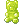
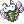
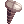
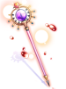
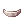
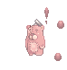
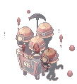

Illusion of Teddy Bear
Main Quest
| Requirements | |
|---|---|
| Base Level: | 150 |
| Starting Point: | einbroch 149/242 |
| Rewards | |
| Experience: | 87,500,000 (Base) and 62,500,000 (Job) |
| Items: | 5  Illusion Stones Illusion Stones
|
- Speak with Young Man (
einbroch 149/242) to start the quest. - Use the Warper > Illusion Dungeons > Illusion of Teddy Bear to go inside the Mine Dungeon near (
ein_dun01 192/78). Speak with Teddy Bear on the right side. - Speak with the other Teddy Bear nearby, near the green light.
- Click on the Entrance to enter the Illusion of Teddy Bear.
- Walk near Stephen right at the entrance of the dungeon (
ein_d02_i 170/193). - Speak with him again.
- Go back to the Young Man, at (
einbroch 149/242). - Speak with Stephen yet again.
- The next location is at
ein_d02_i 132/233, North of the map. Walk near the quest marker to trigger the next cutscene. - You will need to hunt the following mobs:
- 10 Red Teddy Bears
- 10 Yellow Teddy Bears
- 10 Green Teddy Bears
- 10 White Teddy Bears
- 10 Blue Teddy Bears
- Once you are done, go back to Stephen and speak with him. You will be rewarded with some experience and 5 Illusion Stones.
You have now unlocked all the daily quests for Illusion of Teddy Bear.


Daily Quests
Run Away!!!
| Requirements | |
|---|---|
| Base Level: | 150 |
| Starting Point: | ein_d02_i 170/193 |
| Rewards | |
| Experience: | 32,500,000 (Base) and 25,000,000 (Job) |
| Items: | 3 Illusion Stones
|
- Speak with the Stephen and accept his request.
- You will need to gather and hunt the following:
- 10 Hardworking Pitmans
- 10 Soul Fragments
- 10 Haunted Obsidians
- Return to Stephen to get your reward.
Shouldn't Exist
| Requirements | |
|---|---|
| Base Level: | 150 |
| Starting Point: | ein_d02_i 168/206 |
| Rewards | |
| Experience: | 32,500,000 (Base) and 25,000,000 (Job) |
| Items: | 3 Illusion Stones
|
- Speak with the Gloomy Teddy Bear and accept its request.
- You will need to hunt the following:
- 10 Red Teddy Bears
- 10 Yellow Teddy Bears
- 10 Green Teddy Bears
- 10 White Teddy Bears
- 10 Blue Teddy Bears
- Return to Gloomy Teddy Bear to get your reward.
Let the Light Devour the Darkness
| Requirements | |
|---|---|
| Base Level: | 150 |
| Starting Point: | ein_d02_i 191/192 |
| Rewards | |
| Experience: | 32,500,000 (Base) and 25,000,000 (Job) |
| Items: | 3 Illusion Stones
|
- Speak with the Potter and accept her request.
- You will need to gather and hunt the following:
- 1 Shiny Teddy Bear (MVP)
- Return to Potter to get your reward.
Daily Quest Reset

As an exclusive feature to NovaRO, you are able to reset all your daily quests cooldowns.
That means you are able to farm Illusion Stones as much as you want on a single character, without having to create additional characters to bypass the cooldown.
To do so, talk to Osmundi. He can be found inside one of the following locations:
- Illusion of Moonlight dungeon .
- Illusion of Vampire dungeon .
- Illusion of Frozen dungeon .
- Illusion of Abyss dungeon .
- Illusion of Teddy Bear dungeon .
- Illusion of Luanda dungeon .
- Illusion of Twins dungeon .
- Illusion of Labyrinth dungeon .
- Illusion of Underwater dungeon .
They are separated in 5 distinct difficulty groups. Each reset will award you with a set amount of:
- Tier 1: Illusion of Moonlight and Illusion of Frozen.
- Reset Reward:
 10 Illusion Stone and a choice between
10 Illusion Stone and a choice between  Moonlight Refine Box and
Moonlight Refine Box and  Frozen Refine Box
Frozen Refine Box
- Reset Reward:
- Tier 2: Illusion of Vampire and Illusion of Abyss
- Reset Reward: 12 Illusion Stone and a choice between
 Vampire Refine Box and
Vampire Refine Box and  Abyss Refine Box
Abyss Refine Box
- Reset Reward:
- Tier 3: Illusion of Teddy Bear and Illusion of Underwater - 1
- Reset Reward: 14 Illusion Stone and a choice between
 Teddy Bear Refine Box and
Teddy Bear Refine Box and  Underwater Refine Box
Underwater Refine Box
- Reset Reward:
- Tier 4: Illusion of Luanda and Illusion of Twins
- Reset Reward: 16 Illusion Stone and a choice between
 Luanda Refine Box and
Luanda Refine Box and  Twins Refine Box
Twins Refine Box
- Reset Reward:
- Tier 5: Illusion of Labyrinth and Illusion of Underwater - 2
- Reset Reward: 22 Illusion Stone and a choice between
 Labyrinth Refine Box and Underwater Refine Box
Labyrinth Refine Box and Underwater Refine Box
- Reset Reward:
The first reset of the day, for each group, will give a 12 Illusion Stone bonus.
Once you complete the dailies of one of the Tiers above, you can reset them. After a reset, these quests will not give any experience until their original 24 hours cooldown pass.
Each Tier can be completed and reset separately, but you cannot reset dailies from a single Illusion Dungeon without completing the others in their respective group.
MVP Spawn
To spawn the Shinny Teddy Bear MVP, you have to kill 2500 mobs in the dungeon. There will then be an announce on the map when he appears.
Illusion Gears

Speak with Illusion Teddy Bear (ein_d02_i 177/158) inside the Illusion of Teddy Bear dungeon, south of the entrance.
You need to equip the base item to be able to craft its Illusion counterpart.
More information about these Illusion Enchants can be found in this page.
| Image | Name | Description | Crafting |
|---|---|---|---|

|
Illusion Counter Dagger [2] |
CRIT + 90.
Increases attack speed by 10% (reduces after attack delay by 10%).
Attack: 170 Weight: 90 Weapon Level: 4 Required Level: 120 Usable Jobs: Mage classes, Soul Linker classes.
|
 75 Green Teddy Bears  50 Fine Chonchon Dolls |

|
Illusion Gate Keeper-DD [2] |
Splash Attack, DEX + 1.
ATK + 10%.
Attack: 240 Weight: 130 Weapon Level: 4 Required Level: 120 Usable Jobs: Rebellion.
|
 150 Nazarian Soul Stones |
|  | Illusion Survivor's Staff [2] |
INT + 2, DEX + 2.
MATK + 50.
Attack: 100 Weight: 120 Weapon Level: 4 Required Level: 120 Usable Jobs: Mage classes, Soul Linker classes, Acolyte classes.
|
|

|
Illusion Boots [1] |
Increases attack speed by 1% (reduces after attack delay by 1%) per refine rate.
Defense: 16 Weight: 60 Required Level: 100 Usable Jobs: Swordsman classes, Merchant classes, Thief classes, Archer classes, Gunslinger classes, Star Gladiator classes.
|
|

|
Illusion Hot-blooded Headband [1] |
STR + 2.
Defense: 3 Location: Upper Weight: 10 Required Level: 120 Usable Jobs: All except Novice.
|
 +7 Hot-blooded Headband
|

 +7
+7 

 +7
+7  75
75  +7
+7  +7
+7  4
4  +7
+7
Illusion Enchants
Illusion equipment can be enchanted. For details, see here.
Refine Box
Completing Daily Quest Reset rewards the player with a Refine Box that can upgrade (or sometimes downgrade) a +4 or higher illusion equipment from the matching dungeon to +7 ~ +10.
Defeating an illusion MVP rewards the MVP player (to be confirmed) by chance with a Special Refine Box that can upgrade (or sometimes downgrade) a +4 or higher illusion equipment from the matching dungeon to +9 ~ +12.
You can exchange 25 Refine Box of a single dungeon for 1 Special Refine Box of the same dungeon from Illusion Merchant NPC ().
Note that:
- The chance of getting each refine level is not uniform. For example, there is a significantly lower chance of getting +10 than getting +7 when using a regular Refine Box.
- An upgrade is not guaranteed. For example, using a Refine Box on a +9 illusion equipment may result in a downgrade to +7.
Monsters
| Image | Name | Level | HP | Size / Race / Element |
|---|---|---|---|---|
|  | Red Teddy Bear | 155 | 328,072 | Small / Formless / Fire 1 |

|
Yellow Teddy Bear | 155 | 294,044 | Small / Formless / Wind 1 |

|
Green Teddy Bear | 157 | 331,960 | Small / Formless / Poison 1 |

|
White Teddy Bear | 155 | 311,841 | Small / Formless / Neutral 1 |

|
Blue Teddy Bear | 152 | 280,657 | Small / Formless / Water 1 |
|  | Hardworking Pitman | 154 | 305,605 | Large / Demon / Earth 2 |
| Soul Fragment | 153 | 290,324 | Small / Formless / Neutral 2 | |

|
Vicious Mind Haunted Obsidian | 156 | 318,593 | Small / Formless / Earth 2 |

|
Shining Teddy Bear | 160 | 10,724,874 | Large / Formless / Holy 4 |

Cards
| Card | Type | Effects |
|---|---|---|
| Weapon Card |
MATK + 5. | |
| Armor Card |
HIT + 10, ATK + 5%. | |
| Weapon Card |
MATK + 5. | |
| Garment Card |
FLEE + 3, increases attack speed by 1% (reduces delay after attack by 1%) for every 10 base AGI. | |
| Shoes Card |
Increases the SP consumption of skills by 10%. Increases holy property magical damage by 3% per refine rate. |